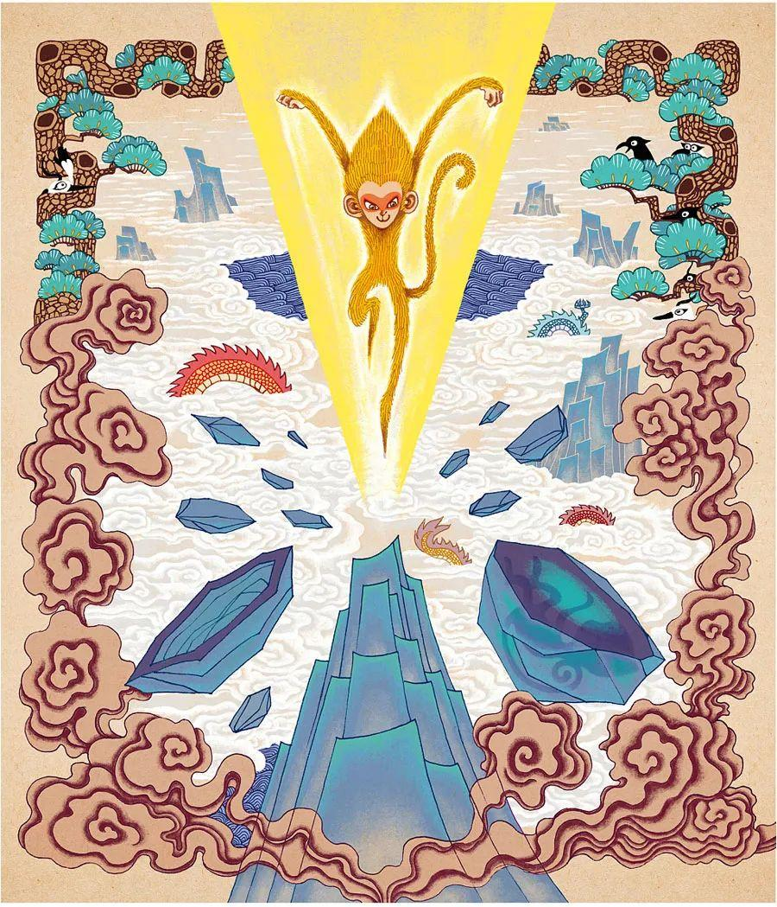

四大名著英译
Translation of Four Chinese Literature Classics
四大名著英译
Translation of Four Chinese Literature Classics
第一回(选段) 灵根育孕源流出 心性修持大道生
Chapter 1 (Selection) The Divine Root Conceives and the Spring Breaks Forth As the Heart's Nature Is Cultivated, the Great Way Arises

诗曰：
混沌未分天地乱，茫茫渺渺无人见。
自从盘古破鸿蒙，开辟从兹清浊辨。
覆载群生仰至仁，发明万物皆成善。
欲知造化会元功，须看《西游释厄传》。
Before Chaos was divided, Heaven and Earth were one;
All was a shapeless blur, and no men had appeared.
Once Pan Gu destroyed the Enormous Vagueness
The separation of clear and impure began.
Living things have always tended towards humanity:
From their creation all beings improve.
If you want to know about Creation and Time,
Read Difficulties Resolved on the Journey to the West.
盖闻天地之数，有十二万九千六百岁为一元。将一元分为十二会，乃子、丑、寅、卯、辰、已、午、未、申、西、成、亥之十二支也。
每会该一万八百岁。
In the arithmetic (/əˈrɪθmətɪk/) of the universe, 129, 600 years make one cycle. Each cycle can be divided into twelve phases: I, II, III, IV, V, VI, VII, VIII, IX, X, XI and XIII,
the twelve branches. Each phase lasts 10,800 years.
且就一日而论：子时得阳气，而丑则鸡鸣；寅不通光，而卯则日出；辰时食后，而已则挨排；日午天中，而未则西蹉；申时晡（bū）而日落酉；戌黄昏而人定亥。
Now within a single day, the positive begins at the time I; at II the cock crows; at III it is not quite light;
at IV the sun rises; V is after breakfast; and at VI one does business. VII is when the sun reaches noon; at Vl it is slipping towards the west; IX is late afternoon;
the sun sets at X; XI is dusk; and at XII people settle down for the night.
譬于大数，若到戌会之终，则天地昏朦而万物否矣。
再去五千四百岁，交亥会之初，则当黑暗，而两间人物俱无矣，故曰混沌。
If you compare this with the big numbers, then at the end of Phase XI Heaven and Earth were still one, and no beings had appeared.
5,400 years later came the beginning of Phase XII, when all was darkness and there were still no people or other creatures; for this reason it was called Chaos.
又五千四百岁，亥会将终，贞下起元，近子之会，而复逐渐开明。邵康节日：
Another 5, 400 years later Phase XII was drawing to a close and a new cycle was about to begin. As Phase I of the new era approached, gradually there was light.
As Shao Yong said,
“冬至子之半，天心无改移。一阳初动处，万物未生时。”
“When winter reaches the mid-point of Phase I
The heart of Heaven does not move.
Where the Positive first appears
Nothing has yet come to life.”
到此，天始有根。再五千四百岁，正当子会，轻清上腾，有日，有月，有星，有辰。日、月、星、辰，谓之四象。故日，天开于子。
At this time, Heaven first had a foundation. 5,400 years later, in the middle of Phase I, the light and pure rose upwards, and sun, moon, stars, and constellations were created.
These were called the Four Images. Hence the saying that heaven began in I.
又经五千四百岁，子会将终，近丑之会，而逐渐坚实。
Another 5, 400 years later, when Phase I was nearing its end and Phase II was imminent, things gradually solidified.
《易》曰：”大哉乾元！至哉坤元！万物资生，乃顺承天。”至此，地始凝结。
As the Book of Changes says, "Great is the Positive; far-reaching is the Negative!
All things are endowed and born in accordance with Heaven.” This was when the earth began to congeal (/kənˈdʒiːl/).
再五千四百岁，正当丑会，重浊下凝，有水，有火，有山，有石，有土。水、火、山、石、土，谓之五形。故曰，地辟于丑。
After 5, 400 more years came the height of Phase Il, when the heavy and impure solidified, and water, fire, mountains, stone, and Earth came into being.
These five were called the Five Movers. Therefore it is said that the Earth was created in Phase II.
又经五千四百岁，丑会终而寅会之初、发生万物。
历曰：“天气下降，地气上升；天地交合，群物皆生。”至此，天清地爽，阴阳交合。
After a further 5, 400 years, at the end of Phase II and the beginning of the Phase III, living beings were created.
In the words of the Book of the Calendar: “The essence of the sky came down and the essence of earth went up Heaven and Earth intermingled, and all creatures were born.”
Then Heaven was bright and Earth was fresh, and the Positive intermingled with the Negative.
再五千四百岁，正当寅会，生人，生兽，生禽，正谓天地人，三才定位。故曰，人生于寅。
5, 400 years later, when Phase Ill was at its height, men, birds and beasts were created. Thus the Three Powers —— Heaven, Earth and Man —— now had their set places.
Therefore it is said that man was created in Phase III.
感盘古开辟，三皇治世，五帝定伦，世界之间，遂分为四大部洲：曰东胜神洲，曰西牛贺洲，曰南赡部洲，曰北俱芦洲。这部书单表东胜神洲。
Moved by Pan Gu's creation, the Three Emperors put the world in order and the Five Rulers laid down the moral code. The world was then divided into four great continents: The Eastern Continent of Superior Body, the Western Continent of Cattle-gift, the Southern Continent of Jambu and the Northern Continent of Kuru.
This book deals only with the Eastern Continent of Superior Body.
海外有一国土，名曰傲来国。国近大海，海中有一座名山，唤为花果山。
Beyond the seas there is a country called Aolai. This country is next to an ocean, and in the middle of the ocean is a famous island called the Mountain of Flowers and Fruit.
此山乃十洲之祖脉，三岛之来龙，自开清浊而立，鸿蒙判后而成。真个好山！有词赋为证。赋曰:
This mountain is the ancestral artery of the Ten Continents, the origin of the Three Islands; it was formed when the clear and impure were separated andthe Enormous Vagueness was divided.
It is a really splendid mountain and there are some verses to prove it:
势镇汪洋，威宁瑶海。
It stills the ocean with its might,
It awes the jade sea into calm.
势镇汪洋，潮涌银山鱼入穴;
It stills the ocean with its might:
Tides wash its silver slopes and fish swim into its caves
威宁瑶海，波翻雪浪蜃离渊。
It awes the jade sea into calm:
Amid the snowy breakers the sea-serpent rises from the deep.
水火方隅高积土，东海之处耸崇巅。
It rises high in the corner of the world where Fire and Wood meet;
Its summit towers above the Eastern Sea
丹崖怪石，削壁奇峰。
Red cliffs and strange rocks;
Beetling crags and jagged peaks.
丹崖上，彩风双鸣；削壁前，麒麟独卧。
On the red cliffs phoenixes sing in pairs,
Lone unicorns lie before the beetling crags.
峰头时听锦鸡鸣，石窟每观龙出人。
The cry of pheasants is heard upon the peaks;
In caves the dragons come and go.
林中有寿鹿仙狐，树上有灵禽玄鹤。
There are deer of long life and magic foxes in the woods;
Miraculous birds and black cranes in the trees.
瑶草奇花不谢，青松翠柏长春。
There are flowers of jade and strange plants that wither not;
Green pine and bluish cypress (/ˈsaɪprəs/) ever in leaf,
仙桃常结果，修竹每留云。
Magic peaches always in fruit.
Clouds gather round the tall bamboo.
一条润壑藤萝密，四面原堤草色新。
The wisteria (/wɪˈstɪəriə/) grows thick around the mountain brook
And the banks around are newly-coloured with flowers.
正是百川会处擎天柱，万劫无移大地根。
It is the Heaven-supporting pillar where all the rivers meet,
The Earth's root, unchanged through a myriad aeons.
那座山正当顶上，有一块仙石。其石有三丈六尺五寸高，有二丈四尺围圆。
There was once a magic stone on the top of this mountain which was thirty-six feet five inches high and twenty-four feet round.
三丈六尺五寸高，按周天三百六十五度；二丈四尺围圆，按政历二十四气。上有九窍八孔，按九宫八卦。
It was thirty-six feet five inches high to correspond with the 365 degrees of the heavens, and twenty-four feet round to match the twenty-four divisions of the solar calendar.
On top of it were nine apertures and eight holes, for the Nine Palaces and the Eight Trigrams.
四面更无树木遮阴，左右倒有芝兰相村。盖自开辟以来，每受天真地秀，日精月华，感之既久，遂有灵通之意。
There were no trees around it to give shade, but magic fungus and orchids clung to its sides. Ever since Creation began it had been receiving the truth of Heaven, the beauty of Earth, the essence of the Sun and the splendour of the Moon;
and as it had been influenced by them for so long it had miraculous powers.
内育仙胞，一日迸裂，产一石卵，似圆球样大。
It developed a magic womb, which burst open one day to produce a stone egg about the size of a ball.
因见风，化作一个石猴。五官俱备，四肢皆全。便就学爬学走，拜了四方。
As his eyes moved, two beams of golden light shot towards the Pole Star palace and startled the Supreme Heavenly Sage,
the Greatly Compassionate Jade Emperor of the Azure Vault of Heaven, who was sitting surrounded by his immortal ministers on his throne in the Hall of Miraculous Mist in the Golden-gated Cloud Palace.
见有金光焰焰，即命千里眼、顺风耳开南天门观看。二将果奉旨出门外，看的真，听的明。
When he saw the dazzling golden light he ordered Thousand-mile Eye and Wind-accompanying Ear to open the Southern Gate of Heaven and take a look.
The two officers went out through the gate in obedience to the imperial command, and while one observed what was going on the other listened carefully.
须臾回报道：
“臣奉旨观听金光之处，乃东胜神洲海东做来小国之界，有一座花果山，
山上有一仙石，石产一卵，见风化一石猴，在那里拜四方，眼运金光，射冲斗府。
如今服饵水食，金光将潜息矣。”
玉帝垂赐恩慈日：“下方之物，乃天地精华所生，不足为异。”
Soon after-wards they reported back:
“In obedience to the Imperial Mandate your subjects observed and listened to the source of the golden light. We found that at the edge of the country of Aolai, which is east of the ocean belonging to the Eastern Continent of Superior Body,
there is an island called the Mountain of Flowers and Fruit.
A magic stone on the top of this mountain produced a magic egg, and when the wind blew on this egg it turned into a stone monkey which bowed to each of the four quarters.
When he moved his eyes, golden light shot towards the Pole Star Palace;
but now that he is eating and drinking, the golden light is gradually dying.”
In his benevolence and mercy the Jade Emperor said,
“Creatures down below are born of the essence of heaven and earth: there is nothing remarkable about him.”
那猴在山中，却会行走跳跃，食草木，饮涧泉，采山花，觅树果；
与狼虫为伴，虎豹为群，獐鹿为友，猕猿为亲；
夜宿石崖之下，朝游峰洞之中。
On his mountain the monkey was soon able to run and jump, feed from plants and trees, drink from brooks and springs, pick mountain flowers and look for fruit.
He made friends with the wolves, went around with the tigers and leopards, was on good terms with the deer, and had the other monkeys and apes for relations.
At night he slept under the rock faces, and he roamed around the peaks and caves by day.